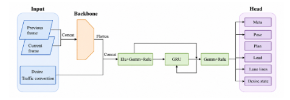
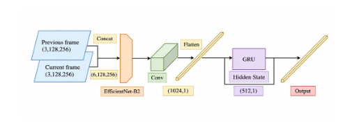
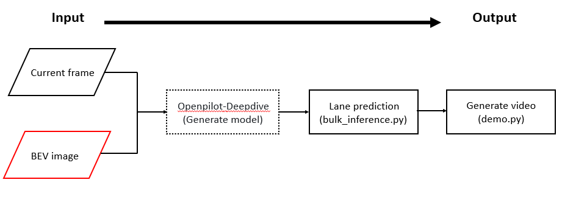

Traditional trajectory prediction models often suffer from reduced accuracy in complex urban environments due to their reliance on sequential images. To ad- dress this issue, this study replaces the previous-frame image with a BEV image generated from the navigation route, providing richer global spatial and naviga tion information. A BEV image generation pipeline is proposed, where noisy GPS trajectories are aligned to OSM road centerlines through map matching and opti mization. The proposed method is evaluated on the nuScenes dataset using a CNN for feature extraction and a GRU to model temporal driving dynamics, followed by multi-trajectory prediction. By integrating BEV navigation information with vi sual features, the proposed approach improves trajectory prediction robustness and enhances path planning performance for autonomous driving systems.


To incorporate BEV map information, while the industry standard uses high-precision equipment at high cost, we opted to use publicly available route information from OpenStreetMap to avoid increasing costs. Input the BEV graphic into the model and observe whether training the model improves its trajectory prediction performance.

The system needs to read a specific JSON data file containing OpenStreetMap (OSM) map data and perturbed GPS tracks. The original GPS sampling points (red dots in the image) are typically scattered or offset, distributed around road segments. To correct these deviations, the system performs core map matching logic, aligning these perturbed GPS points with the map road network to ensure all coordinates are accurately aligned to the road centerline. Finally, the aligned data is converted into BEV (bird's-eye view) imagery, generating a road environment pattern viewed from a vertical perspective, serving as the foundational output for subsequent analysis and perception by the autonomous driving system. In the configuration shown above, the system uses traditional time-series input, simultaneously feeding the "current frame" and "previous frame" into the generated model. This approach primarily relies on the visual feature changes between preceding and following images to allow the model to understand vehicle motion and environmental dynamics. Next, the model performs lane prediction using the `bulk_inference.py` script, and finally, `demo.py` converts the results into a visual video output.
@misc{santana2016learningdrivingsimulator,
title={Learning a Driving Simulator},
author={Eder Santana and George Hotz},
year={2016},
eprint={1608.01230},
archivePrefix={arXiv},
primaryClass={cs.LG},
url={https://arxiv.org/abs/1608.01230},
}
@misc{schafer2018commutedatacomma2k19dataset,
title={A Commute in Data: The comma2k19 Dataset},
author={Harald Schafer and Eder Santana and Andrew Haden and Riccardo Biasini},
year={2018},
eprint={1812.05752},
archivePrefix={arXiv},
primaryClass={cs.RO},
url={https://arxiv.org/abs/1812.05752},
}
@misc{goff2025learningdriveworldmodel,
title={Learning to Drive from a World Model},
author={Mitchell Goff and Greg Hogan and George Hotz and Armand du Parc Locmaria and Kacper Raczy and Harald Schäfer and Adeeb Shihadeh and Weixing Zhang and Yassine Yousfi},
year={2025},
eprint={2504.19077},
archivePrefix={arXiv},
primaryClass={cs.CV},
url={https://arxiv.org/abs/2504.19077},
}
@INPROCEEDINGS{9156412,
author={Caesar, Holger and Bankiti, Varun and Lang, Alex H. and Vora, Sourabh and Liong, Venice Erin and Xu, Qiang and Krishnan, Anush and Pan, Yu and Baldan, Giancarlo and Beijbom, Oscar},
booktitle={2020 IEEE/CVF Conference on Computer Vision and Pattern Recognition (CVPR)},
title={nuScenes: A Multimodal Dataset for Autonomous Driving},
year={2020},
volume={},
number={},
pages={11618-11628},
keywords={Sensors;Laser radar;Three-dimensional displays;Cameras;Radar tracking;Autonomous vehicles},
doi={10.1109/CVPR42600.2020.01164}}
@misc{chen2022level2autonomousdriving,
title={Level 2 Autonomous Driving on a Single Device: Diving into the Devils of Openpilot},
author={Li Chen and Tutian Tang and Zhitian Cai and Yang Li and Penghao Wu and Hongyang Li and Jianping Shi and Junchi Yan and Yu Qiao},
year={2022},
eprint={2206.08176},
archivePrefix={arXiv},
primaryClass={cs.CV},
url={https://arxiv.org/abs/2206.08176},
}